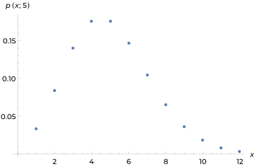

Discrete RV Distribution Functions
September 19-21, 2018"Maybe if I force myself to write an article about this math concept, I'll start to understand it"
This is the first of a series of articles I plan to write, for the sole purpose of reviewing the material in my Intro to Probability and Statistics class. Also, I learned how to generate graphs using Mathematica, and think they are very pretty, so there may be more graphs than necessary.
Discrete RVs (random variables) are RVs that can have any number of discrete values without containing any range of numbers. There are a number of different distributions that can be used to describe the probabilities of RVs taking specific values, some of which I will describe here. First, let's talk a little bit about the different types of functions that are used to describe these distributions, which I will define for each function later on:
Types of Functions
Expected Value
The expected value is simply the average outcome of a random variable. When I say average, I mean the weighted average, meaning that values are weighted into the average proportional to the probability of their occurance. This can be called the expected value, or expectation of \(X\), given the RV \(X\). It is also sometimes referred to using \(\mu\). Generally speaking, \(E(X)\) is calculated for a set of given outcomes by the sum of every outcome, each first multiplied by its probability of occurance. This is described by the following equation: $$E(X) = \mu_x = \sum_xxp(x)$$
The real difference between using \(\mu\) and \(E(X)\), is that \(E(X)\) is a more generalized function that can have its input be a function of the random variable. On the other hand, \(\mu\) only ever refers to the mean outcome of a RV. For the rest of this write-up, I will only use \(\mu\) when I just want to refer to the mean, rather than a generalized function for expected values.
Variance
The variance is a simple way of quantifying how closely the probabilities fall to the mean. This is useful because a data set can look much different depending on how spread out (evenly distributed) the different possibilities are. The variance is calculated by simply finding the expected value of the deviation from the mean, squared: $$V(X) = E(X^2)$$
PMF (Probability Mass Function)
A PMF is just a function that describes what the probability is that an RV takes any given value. This is probably this simplest way to describe the behavior of a discrete random variable.
CDF (Cumulative Distribution Functions)
The CDF describes the total probability of any outcomes occuring up to a value. This is represented by the following simple equation: $$F(x) = P(X\leq x) = \sum_{y:y\leq x}p(y)$$
That summation looks complex, but it really just means "the sum of the probabilities of every number y such that y is less than x."
MGF (Moment Generating Function)
Just as the variance is a type of expected value, a moment-generating function is is one of a catergory of expected values, defined by the following equation: $$M_x(t) = E(e^{tx}) = \sum_xe^{tx}p(x)$$
A mgf exists if \(t \in (-t_0,t_0)\) where \(t_0 > 0\).
Types of Distributions
Bernoulli Distribution
Bernoulli distributions are the simplest and easiest to understand. They can take either of two values: 0 or 1. The only definition necessary is the probability of each of these outcomes, which of course would add up to 1. It's important to understand the concept of the Bernoulli distribution not because of any overwhelming usefulness, but because the another distributions build upon it conceptually.
The expected value of a Bernoulli distribution is quite simple, just the probability of an outcome of 1 denoted by \(p\): $$E(X) = p$$
The variance is almost as simple, just the probability of a success multiplied by the probability of a failure: $$V(X) = p(1-p)$$
Binomial Distribution
A binomial distribution could be seen as an extension of the Bernoulli distribution, because it represents a set of n Bernoulli trials: independent events that could have the outcomes 0 or 1. It is important to remember that even though these trials happen independently, the probability of each outcome is still the same for every trial.
The expected value of a binomial distribution is also quite simple, just the probability of a success multiplied by the number of trials \(n\): $$E(X) = np$$
The variance of a binomial is also somewhat straightforward, just the probability of a success times the probability of a failure (a Bernoulli variance), once again multiplied by the number of trials performed: $$V(X) = np(1-p)$$
The pdf: $$P(X=x) = \binom{n}{x}p^x(1-p)^{n-x}, x = 0,1,2,\dots,n$$
Geometric Distribution
According to Wikipedia "geometric distribution" has one of two very similar definitions, but for my purposes I'm going to define them as the probability distribution representing the number of Bernoulli trials that take place before a trial yields a "success." That number could be infinitely large. Given probability of each trial's success \(p\), the expected value is very simple: $$E(X) = \frac{1}{p}$$
How cool is that? The mean outcome of a geometric distribution has a simple inverse relationship with the probability of a success. The variance: $$V(X) = \frac{1-p}{p^2}$$
The pmf of a geometric distribution for \(k\) trials is the following: $$p(x;p) = p(1-p)^{x-1}$$
The cdf is: $$f(x) = 1-(1-p)^k$$
Hypergeometric Distribution
A hypergeometric distribution applies when you have a population of indiduals/elements. Each element is a success or failure, with \(M\) successes in the population. If a random sample of \(n\) elements are randomly chosen, the hypergeometric distribution represents how many in that sample are successes. The expected value and variance can be calculated like so: $$E(X) = n\frac{M}{N}\\ V(X) = \frac{N-n}{N-1}n\frac{M}{N}(1-\frac{M}{N})$$
The pmf is: $$p(X=x) = \frac{\binom{M}{x}\binom{N-M}{n-x}}{\binom{N}{n}}$$
Poisson Distribution
The idea behind a poisson distribution is unique among those for discrete RVs, because it represents the probability of an event happening over an interval of time or space. This is an incredibly powerful idea because it allows you to calculate the probability of that event happening over any interval. It's important to remember that the events are still independent, and the probability of one happening over an interval must remain constant.
The number of times an event is expected to happen over an interval is denoted by \(\lambda\). Note that this by definition means your \(\lambda\) is your mean and your variance. How convenient! $$E(X) = \lambda\\V(X) = \lambda$$
The pmf of a poisson distribution is as follows: $$p(x;\lambda) = \frac{\lambda^xe^{-\lambda}}{x!}$$
For example, here is a graph of Poisson probabilities given \(\lambda = 5\):

Basic Functions in R
A number of the functions I have outlined here have functions in R that make it easy to calculate them or check your work:
# Compute the probability of a binomial distribution: dbinom(x, size, prob) # Compute the probability of a geometric distribution: dgeom(x, prob) # Compute the probability of a hypergeometric distribution: dhyper(x, m, n, k) # Compute the probability of a Poisson distribution: dpois(x, lambda)